SpotCheck Mobile App
Official User Manual
Real-Time Hyper-Local Travel Intelligence from Verified Native Residents. A complete guide to APK installation, bot-free onboarding, GPS telemetry, live camera proof verification, and community gamification.
📋 Table of Contents
Part 1: Downloading & Installing the APK
Visual procedure for installing SpotCheck on Android devices without Google Play Store dependencies.
Download Completion & Open Prompt
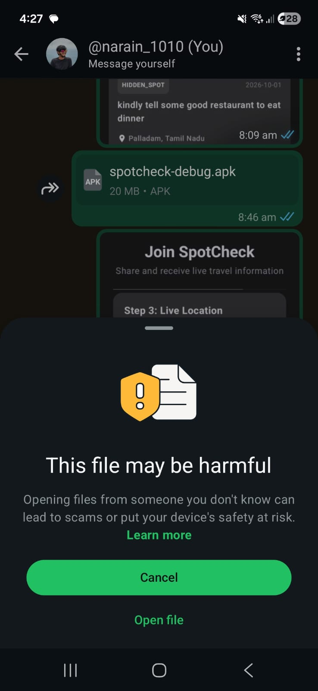
Once you download spotcheck-debug.apk (approx 20 MB) to your Android device, the system notification drawer indicates completion:
- Tap "Open file" to launch the installation wizard.
- If prompted with "Install unknown apps", grant permission to Chrome or your File Manager in Android Settings.
Confirm Package Installation
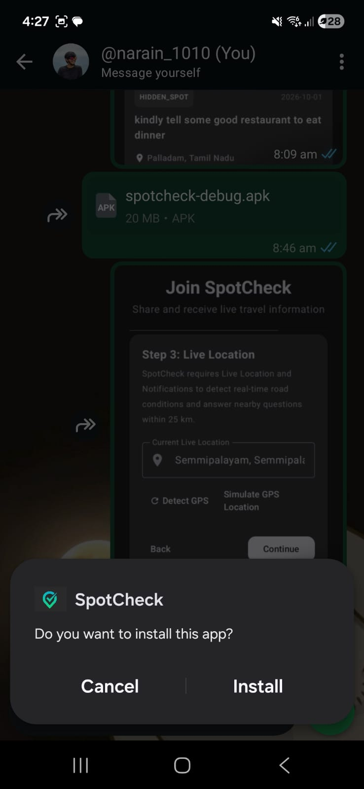
The Android Package Installer asks: "Do you want to install this app?".
- Confirm the app name displays as SpotCheck.
- Tap "Install" in the bottom right corner to unpack the application binary.
Google Play Protect Verification
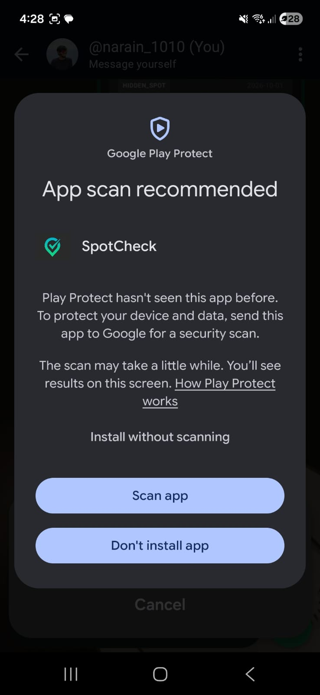
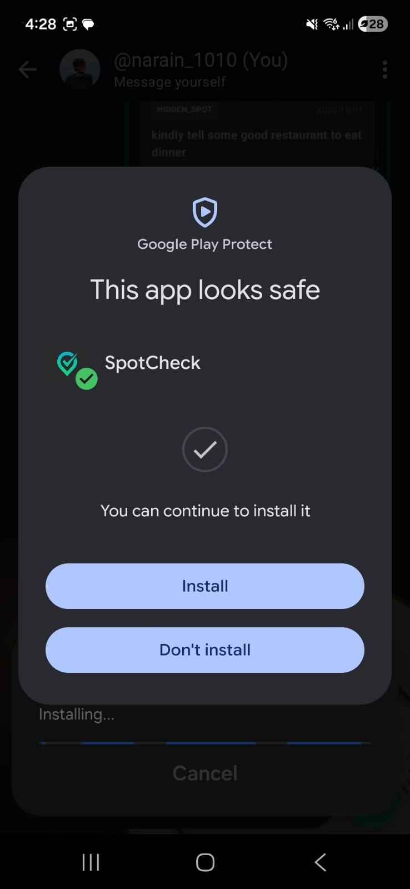
Google Play Protect analyzes the APK package signature:
- Select "Scan app" (or Install without scanning).
- Play Protect verifies the app's cryptographic signature and confirms clean status.
- Tap the green "Install" button. The SpotCheck icon will appear in your application launcher.
Part 2: Account Creation & 4-Step Onboarding
SpotCheck uses high-precision location and verified email credentials to ensure genuine local presence.
Sign In & Account Portal
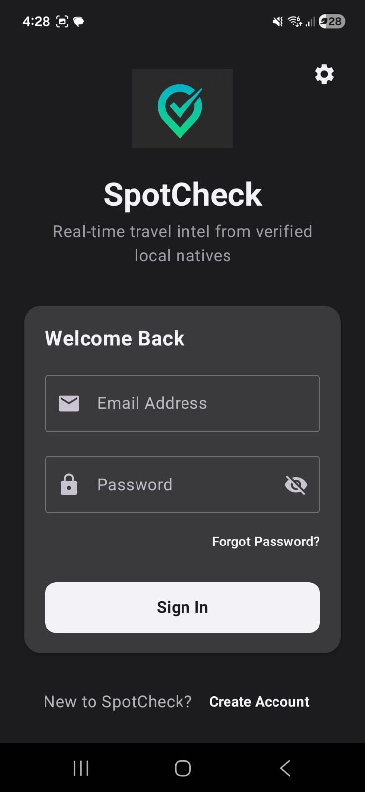
On first launch, SpotCheck welcomes you with a streamlined sign-in portal:
- Existing Users: Enter registered Email Address and Password, then tap "Sign In".
- New Users: Tap the "Create Account" link at the bottom to begin the 4-step registration flow.
Personal Identification Details
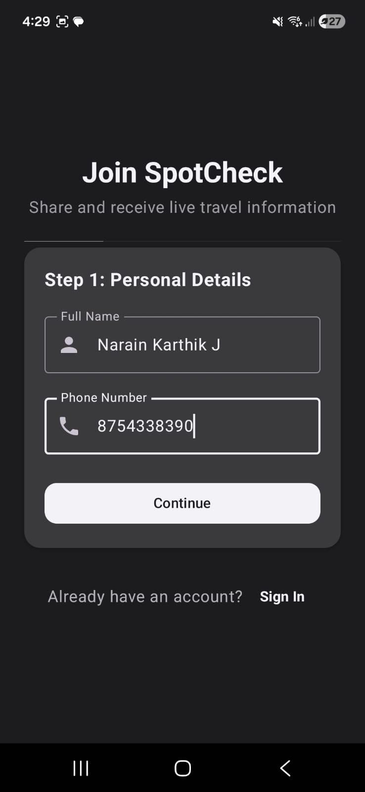
Provide your identity details for the community:
- Full Name: Enter your real name (e.g. Narain Karthik J). This name represents your reputation on verified answers.
- Phone Number: Enter your 10-digit mobile number.
- Tap "Continue" to advance to email verification.
Email Verification via OTP
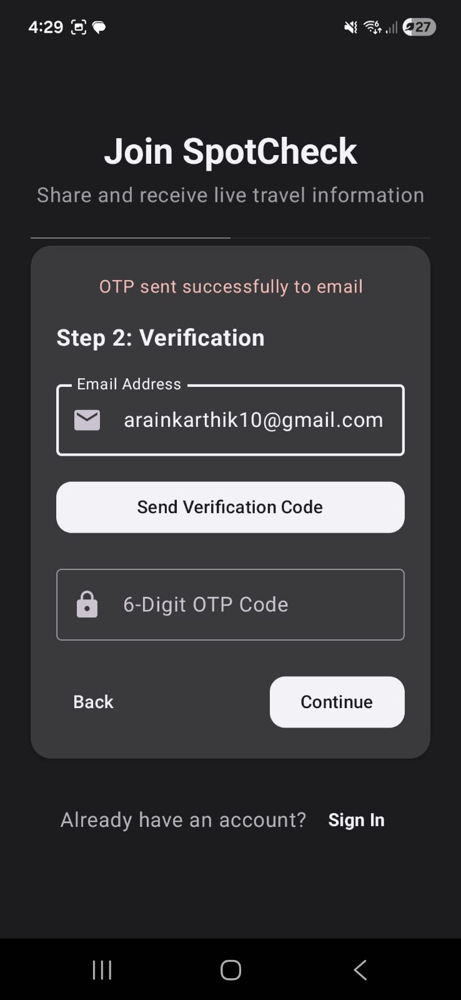
To eliminate bots and spam accounts, email addresses are verified with a 6-digit OTP:
- Input your active Email Address.
- Tap "Send Verification Code".
- Check your inbox and enter the 6-digit PIN in the OTP Code box.
- Tap "Continue".
GPS Permission & Real-Time Geocoding
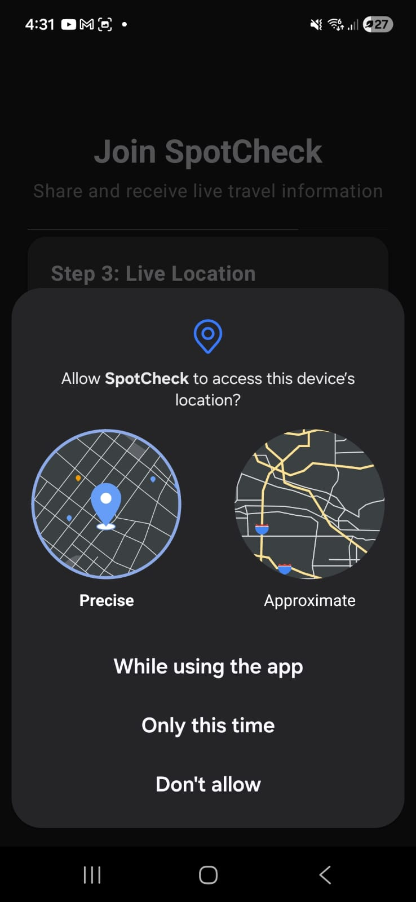
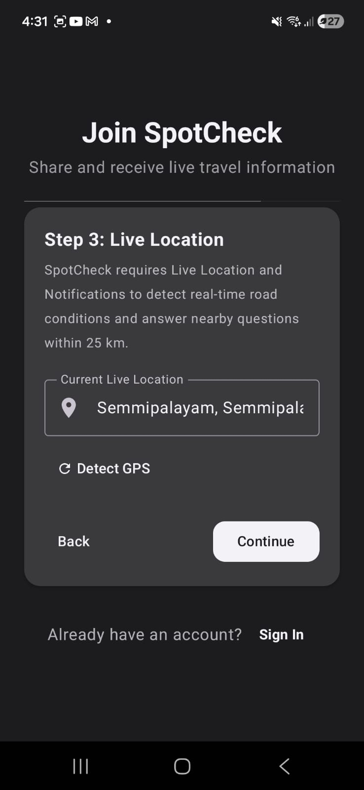
SpotCheck relies on true physical presence to deliver hyper-local travel intelligence:
- Choose "Precise" location and tap "While using the app".
- The reverse geocoding engine identifies your exact town/locality (e.g. Semmipalayam).
- If you recently moved, tap "🔄 Detect GPS" to refresh hardware satellite coordinates.
- Tap "Continue".
Password Security Enforcement
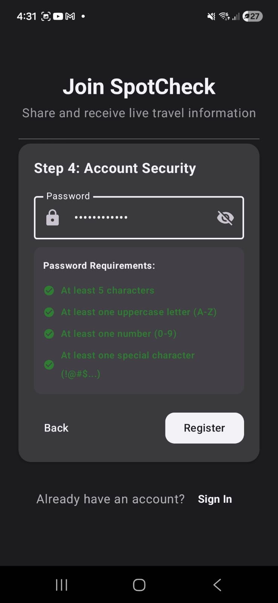
Safeguard your account and accumulated reward points with an enforced password policy:
- At least 5 characters in length
- At least one uppercase character (A-Z)
- At least one numeric digit (0-9)
- At least one special character (!@#$%^&*)
All 4 rules must display green checkmarks. Tap "Register" to enter the live platform!
Part 3: Exploring the Live Map & Spot Sheet
Interactive mapping, real-time weather telemetry, and high-reliability offline navigation caching.
Interactive Map & Weather Telemetry
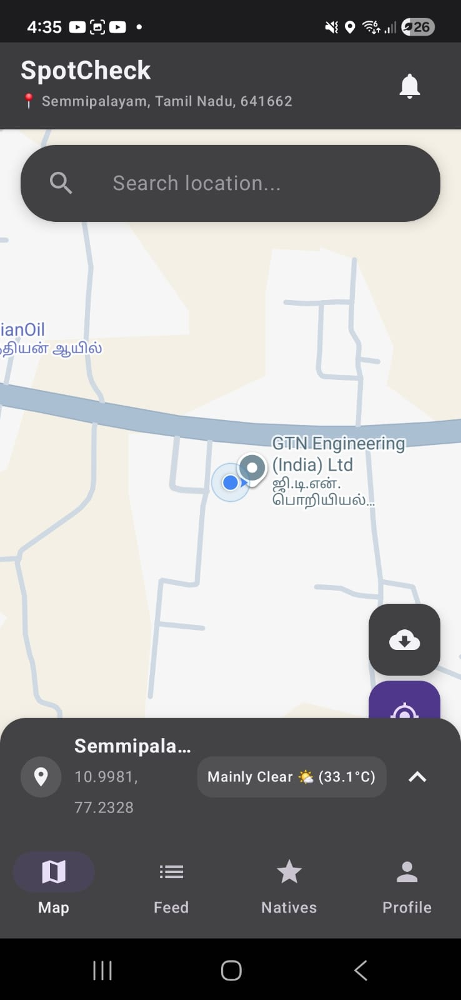
Your primary command center upon entering SpotCheck:
- Blue Pulsing Dot: High-precision satellite GPS location.
- Destination Search: Type any town, landmark, or route to pre-inspect conditions before driving.
- Live Weather Bar: Instant meteorological data (e.g. Mainly Clear ☀️ 33.1°C) fetched for your active coordinates.
- Bottom Navigation: Switch seamlessly between Map, Feed, Natives Leaderboard, and Profile.
Spot Action Sheet & Offline Area Cache
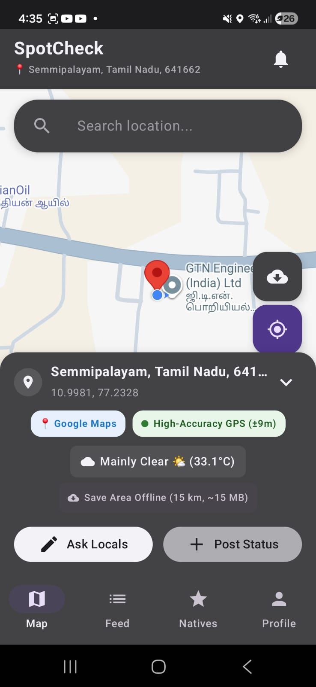
Tap anywhere on the map or tap the location bar to open the expanded Action Sheet:
- Hardware Fix Readout: Shows real-time precision (e.g.
±9m). - 📍 Google Maps: Handoff to external navigation apps for turn-by-turn driving directions.
- 💾 Save Area Offline (15 km, ~15 MB): Pre-downloads vector tiles and road topologies into internal storage so you never lose your map in mountain ghats without cell reception.
- Actions: Quick triggers for "Ask Locals" and "Post Status".
Part 4: Asking Nearby Locals (Hyper-Local Q&A)
Broadcast questions to verified residents living within a 25 km radius of your selected waypoint.
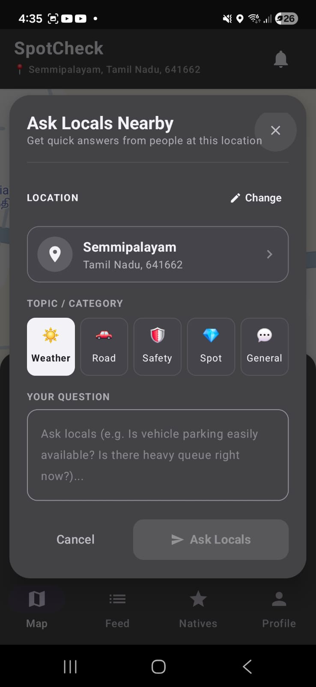
When algorithmic mapping tools can't tell you if a road is flooded or a spot is crowded, ask locals:
- Tap "✏️ Ask Locals" on the Spot Sheet.
- Verify your pinned location.
- Select Category:
- ☀️ Weather: Heavy rains, morning mist, landslide alerts.
- 🚗 Road: Construction diversions, roadblocks, traffic bottlenecks.
- 🛡️ Safety: Night safety, police check-posts.
- 💎 Spot: Local food stalls, scenic viewpoints, parking status.
- 💬 General: Temple timings, ticket lines, ATM availability.
- Type your question clearly and tap "➤ Ask Locals".
Part 5: Posting Live Native Pulse Updates
Anti-fraud photographic updates with hardware camera enforcement and satellite telemetry verification.
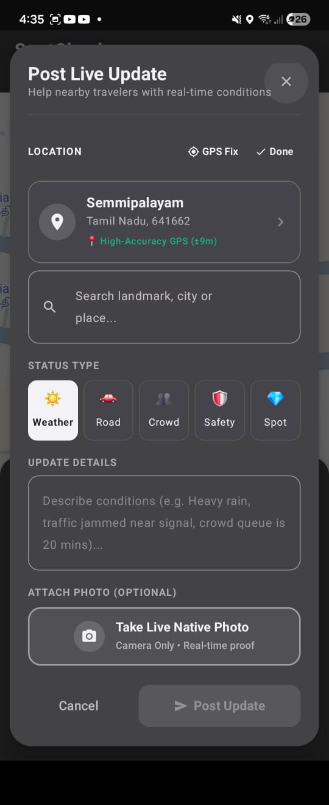
Help fellow travelers by sharing verified road and crowd conditions:
- Tap "➕ Post Status" from the map.
- Confirm your current location and select an update tag (Weather, Road, Crowd, Safety, Spot).
- Write a brief condition note (e.g. "Waterlogging cleared at bypass junction. Normal speed resumed.").
- Take Live Camera Photo:
- Tap "Take Live Photo" to activate the hardware camera.
- Snap the ground condition proof.
- Tap "➤ Post Update" to publish. Your update is instantly visible to all users in the corridor.
Part 6: Browsing Feeds & Community Intelligence
Monitor live traveler questions and browse verified ground reports along your travel corridor.
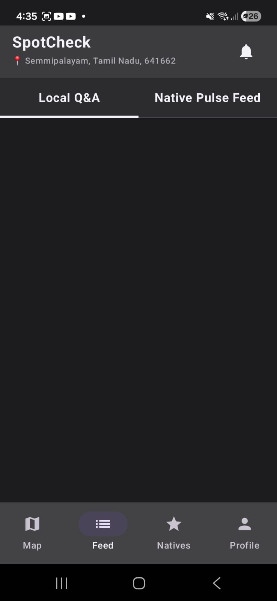
Tap the "Feed" icon in the bottom navigation bar to open the dual-stream community board:
- Local Q&A Tab (Left):
- Review questions asked by nearby travelers.
- Locals can tap to reply and earn +5 reward points for verified answers.
- Native Pulse Feed (Right):
- Real-time chronological stream of live condition reports and verified camera photos.
- Upvote helpful posts or flag outdated hazards.
Part 7: Local Experts & Gamification Leaderboard
Transparent reward points and tier badges celebrating reliable community contributors.
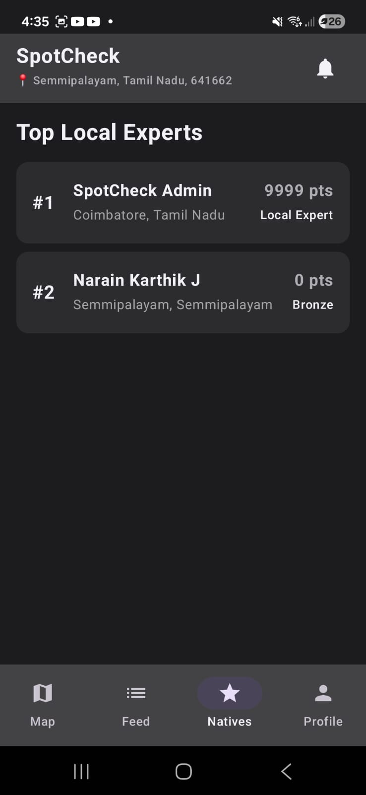
Tap the "Natives" tab to inspect top regional contributors:
| Action | Points | Effect |
|---|---|---|
| Verified Answer Provided | +5 pts | Fast-track rank boost |
| Live Pulse Camera Post | +3 pts | Community credit reward |
| Misleading / Flagged Post | -3 pts | Reputation penalty |
Contributor Tier Progression
Part 8: Profile Management & Server Settings
Manage account identity, inspect your credit balance ledger, and switch backend endpoints.
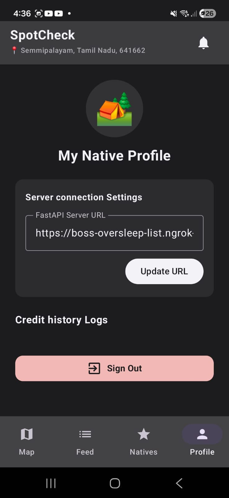
Tap the "Profile" tab on the navigation bar:
- Native Profile Card: Displays avatar, full name, registered email address, and active community tier.
- Points Balance: Live tally of total credits earned from answers and pulse updates.
- FastAPI Server URL:
- Easily switch between development tunnels (e.g.
https://your-ngrok.ngrok-free.app) and production cloud endpoints. - Tap "Update URL" to apply changes without reinstalling the app.
- Easily switch between development tunnels (e.g.
- Credit History: Detailed audit ledger tracking timestamps and reasons for every point transaction.
- Sign Out: Safely terminates your session and clears local cached credentials.
Part 9: Frequently Asked Questions & Support
Solutions to common operational inquiries.